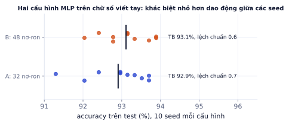
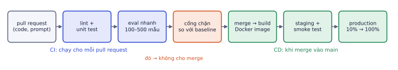
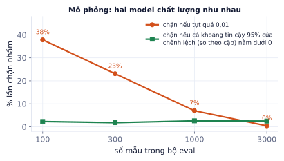

Giai đoạn P8 · Production và MLOpsTuần 35–39Có nội dung đầy đủ
Sau vài tuần thí nghiệm, câu hỏi "model đang chạy được train từ dữ liệu nào, code nào, siêu tham số nào?" thường không ai trả lời được. MLOps là bộ thói quen và công cụ giúp mọi kết quả tái lập được, mọi thay đổi được kiểm tra tự động, và việc đưa model mới lên production an toàn. Bài này dạy theo dõi thí nghiệm, quản lý phiên bản dữ liệu và model, tái lập kết quả (kèm thí nghiệm về dao động giữa các seed), và CI/CD có cổng chặn theo eval được thiết kế đúng thống kê.
Vì sao cần MLOps
Vì sao cần học
Ba tình huống rất thường gặp: (1) model tuần trước tốt hơn nhưng không ai nhớ cấu hình; (2) ai đó sửa prompt "cho hay hơn" và chatbot trả lời sai chính sách mà không ai biết cho tới khi khách phàn nàn; (3) "cải tiến" 1% hóa ra chỉ là may rủi của seed. MLOps giải quyết cả ba. Với người làm freelance, một repo có theo dõi thí nghiệm và CI là bằng chứng mạnh về tính chuyên nghiệp.
Vấn đề
Thói quen / công cụ
Không biết cấu hình của lần chạy tốt nhất
theo dõi thí nghiệm (W&B, MLflow)
Dữ liệu đổi mà không ai biết
phiên bản dữ liệu (DVC, Hugging Face Hub)
Chạy lại không ra kết quả cũ
seed, config ra file, khóa thư viện, Docker
Thay đổi làm hỏng chất lượng
CI với cổng eval
Deploy model mới gây sự cố
CD: staging, smoke test, triển khai dần
Theo dõi thí nghiệm
Mỗi lần train, ghi lại tự động (không dựa vào trí nhớ hay file Excel):
Commit code và config (siêu tham số).
Phiên bản dữ liệu dùng.
Metric theo thời gian (loss mỗi bước, metric val mỗi epoch) và metric cuối trên test.
Artifact: model, biểu đồ, bảng lỗi.
Môi trường: phiên bản thư viện, loại GPU.
importwandb,mathdeftrain():# thay cho vòng train thật: trả về (bước, loss)forstepinrange(100):yieldstep,2.0*math.exp(-step/30)+0.1f1=0.83# mode="offline": chạy không cần tài khoản, log lưu ở thư mục wandb/; bỏ đi để đẩy lên trang W&Brun=wandb.init(project="lab08-extract",mode="offline",config={"lr":2e-4,"r":16,"epochs":3,"data":"v3"})forstep,lossintrain():wandb.log({"train/loss":loss},step=step)wandb.log({"test/f1":f1})run.finish()importosprint("đã ghi log vào",os.path.relpath(run.dir))
đã ghi log vào wandb/offline-run-20261106_183028-5vb4i7fw/files
Weights & Biases (dịch vụ, miễn phí cho cá nhân) và MLflow (mã nguồn mở, tự host được) là hai lựa chọn phổ biến. transformers và TRL có sẵn tham số report_to="wandb" hoặc "mlflow". Lợi ích lớn nhất: so sánh hàng chục lần chạy trên cùng biểu đồ và biết chính xác cấu hình của lần tốt nhất.
Phiên bản dữ liệu và model
Git không hợp với file lớn. Các cách:
DVC: lưu file lớn ở kho ngoài (S3, Google Drive), git chỉ giữ một file nhỏ chứa mã hash. git checkout một commit cũ rồi dvc pull là có đúng dữ liệu của lúc đó.
Hugging Face Hub: dataset và model có phiên bản (mỗi lần đẩy là một commit), có model card; nạp đúng phiên bản bằng tham số revision=.
Model registry (MLflow, W&B): đánh dấu phiên bản model nào đang ở "staging", "production"; rollback bằng cách chuyển nhãn về phiên bản cũ.
Ví dụ từng bước
8 lần chạy, mỗi lần lưu 4 checkpoint, mỗi checkpoint 450 MB:
Giữ tất cả: 8 × 4 × 450 = 14,4 GB.
Chỉ giữ checkpoint tốt nhất (theo val) và cuối cùng: 8 × 2 × 450 = 7,2 GB.
Với LoRA (P5.5, P6.1) chỉ lưu adapter vài chục MB, vấn đề gần như biến mất.
Tái lập kết quả
Dao động giữa các seed
Thí nghiệm: train hai cấu hình mạng nơ-ron nhỏ (32 và 48 nơ-ron ẩn) trên chữ số viết tay, mỗi cấu hình 10 seed khác nhau, cùng dữ liệu:

Cấu hình B trung bình cao hơn A 0,2 điểm, nhưng mỗi cấu hình dao động hơn 2 điểm giữa các seed. Chọn ngẫu nhiên một lần chạy mỗi bên thì A thắng B khá thường xuyên.
Nếu chỉ chạy mỗi cấu hình một lần và thấy B hơn A 1 điểm, bạn có thể kết luận sai hoàn toàn. Quy tắc:
Cố định seed (Python, numpy, torch) và ghi lại. Trên GPU vẫn có sai khác nhỏ do phép tính song song không tất định.
So sánh quan trọng: chạy 3–5 seed, báo trung bình và độ lệch chuẩn.
Chỉ tin cải tiến lớn hơn rõ ràng độ dao động giữa các seed.
Ví dụ từng bước
Năm seed cho F1: 0.71, 0.74, 0.73, 0.69, 0.73.
Trung bình: 0.72.
Độ lệch chuẩn (chia cho n): khoảng 0.018.
Một thay đổi cho F1 0.73 trong một lần chạy chưa nói lên gì: nằm gọn trong dao động.
Các thói quen khác
Config ra file (YAML) thay vì sửa số trong code; mỗi lần chạy lưu kèm config.
Khóa phiên bản thư viện (requirements.txt có số phiên bản cụ thể, hoặc uv.lock); Docker image cho môi trường.
Chia dữ liệu train/val/test một lần, lưu danh sách id, dùng lại cho mọi thí nghiệm.
Chuyển code từ notebook sang script chạy được từ đầu tới cuối bằng một lệnh. Notebook chạy không theo thứ tự là nguồn không tái lập được phổ biến nhất.
CI/CD cho hệ thống ML

CI chạy cho mỗi pull request và có thể chặn merge; CD chạy khi đã merge, đưa model lên dần dần.
CI (continuous integration): mỗi pull request tự động chạy:
Kiểm tra code: lint, unit test (hàm tiền xử lý, parser đầu ra JSON).
Eval nhanh: chạy bộ eval cố định với prompt/model mới.
Cổng chặn: nếu metric tụt so với baseline đang chạy, CI báo đỏ, không cho merge.
CD (continuous delivery): khi merge vào main, tự build Docker image, deploy lên staging, chạy smoke test (vài yêu cầu thật, kiểm tra trả lời đúng định dạng), rồi lên production; có thể dần dần (10% lưu lượng trước, theo dõi lỗi, rồi 100%), và rollback được bằng một lệnh.
Thiết kế cổng chặn đúng
Cổng "chặn nếu tụt quá 0,01" nghe hợp lý, nhưng bộ eval nhỏ có sai số lấy mẫu (P4.3). Mô phỏng: hai model có chất lượng như nhau, đánh giá trên bộ eval kích thước khác nhau, đếm số lần cổng chặn nhầm:

Cổng "tụt quá 0,01" chặn nhầm 38% số lần với 100 mẫu, 23% với 300 mẫu, 7% với 1.000 mẫu. Cổng dựa trên khoảng tin cậy của chênh lệch theo cặp giữ tỉ lệ chặn nhầm khoảng 2% ở mọi kích thước.
Cách làm tốt hơn:
Chạy cả hai model (baseline và mới) trên cùng các mẫu, tính chênh lệch từng mẫu (so theo cặp loại bỏ được độ khó khác nhau giữa các mẫu).
Tính khoảng tin cậy 95% của chênh lệch trung bình.
Chặn nếu cả khoảng nằm dưới 0 (chắc chắn tệ hơn), hoặc dưới một mức tụt cho phép.
Bộ eval càng lớn thì khoảng càng hẹp, cổng càng nhạy với tụt thật.
importnumpyasnpdefgate(scores_new,scores_base,max_drop=0.0):d=np.asarray(scores_new,float)-np.asarray(scores_base,float)# chênh lệch từng mẫu, cùng thứ tựmean,se=d.mean(),d.std(ddof=1)/np.sqrt(len(d))upper=mean+1.96*se# cận trên khoảng tin cậy 95%return("CHẶN"ifupper<-max_dropelse"QUA"),round(mean,4),round(upper,4)# thử: 300 mẫu, model mới sai thêm 30 mẫu so với baselinerng=np.random.default_rng(0)base=(rng.random(300)<0.8).astype(float)new=base.copy();new[:30]=0print(gate(new,base))# tụt thật: chặnprint(gate(base,base))# như nhau: qua
Prompt nằm ngoài git. Prompt sửa trực tiếp trên giao diện quản trị hoặc trong biến môi trường thì không đi qua CI, không có lịch sử, không rollback được. Với hệ thống LLM, prompt là "code": để trong repo, review như code, chạy qua cùng cổng eval.
Ghi nhớ: với hệ thống LLM, thay đổi prompt cũng là thay đổi model. Prompt nằm trong git và đi qua cùng cổng eval như code; và cổng eval phải tính tới sai số lấy mẫu, nếu không nó chặn nhầm hoặc cho qua nhầm.
Tự kiểm tra nhanh
Tóm tắt bài và thuật ngữ
Chủ đề
Ý chính
Theo dõi thí nghiệm
tự động ghi commit, config, dữ liệu, metric, artifact
Phiên bản
DVC / Hub cho dữ liệu; registry cho model; giữ best + last
Tái lập
seed, config YAML, khóa thư viện, Docker, chia dữ liệu một lần, script thay notebook
Seed
báo trung bình ± độ lệch chuẩn của 3–5 seed
CI
lint, test, eval, cổng chặn theo khoảng tin cậy so theo cặp
CD
build image, staging, smoke test, triển khai dần, rollback
Thuật ngữ
Nghĩa
MLOps
vận hành hệ thống ML có kỷ luật như phần mềm
experiment tracking
theo dõi thí nghiệm
artifact
sản phẩm của lần chạy (model, biểu đồ)
DVC
Data Version Control
model registry
kho model có phiên bản và nhãn giai đoạn
reproducibility
khả năng tái lập
CI / CD
tích hợp liên tục / triển khai liên tục
eval gate
cổng chặn theo kết quả eval
paired comparison
so sánh theo cặp trên cùng mẫu
canary / gradual rollout
triển khai dần một phần lưu lượng
smoke test
kiểm tra nhanh xem hệ thống có chạy không
rollback
quay về phiên bản trước
Ô tự chấm đã giải đúng0 / 5
Bài 1
Cổng chặn eval
tính tay
Model đang chạy có F1 0.82. Pull request mới đạt 0.80. Quy tắc: chặn nếu tụt quá 0.01.
Lời giải
Tụt 0.02 > 0.01 nên chặn. Nhưng nhớ bài P4.3: với 100 mẫu, sai số khoảng ±0.08, nên ngưỡng 0.01 trên bộ nhỏ có thể chặn nhầm. Cách tốt hơn: bộ eval lớn hơn, so theo cặp trên cùng mẫu, hoặc ngưỡng dựa trên khoảng tin cậy.
Bài 2
Trung bình nhiều seed
tính tay
Ba seed cho F1: 0.80, 0.84, 0.82. Dùng độ lệch chuẩn chia cho n.
Lời giải
Trung bình 0.82, độ lệch chuẩn khoảng 0.016. Một cải tiến 0.01 nhỏ hơn độ dao động giữa các seed: chưa đủ bằng chứng.
Bài 3
Tình huống không tái lập được
khái niệm
Đồng nghiệp báo: "Tuần trước model đạt 0.86, giờ chạy lại cùng notebook chỉ được 0.81." Liệt kê 5 nguyên nhân có thể và cách phòng mỗi cái.
Lời giải
Dữ liệu đã đổi (ai đó cập nhật file): DVC/Hub có phiên bản. 2. Thư viện cập nhật: khóa phiên bản, Docker. 3. Seed khác hoặc không cố định: ghi seed, chạy nhiều seed. 4. Chia train/test lại ngẫu nhiên: lưu danh sách id cố định. 5. Code notebook chạy không theo thứ tự hoặc biến cũ còn trong bộ nhớ: chuyển sang script, chạy lại từ đầu, theo dõi thí nghiệm ghi commit và config.
Bài 4
Workflow CI có cổng eval
code
Viết workflow GitHub Actions chạy test và script eval cho mỗi pull request, và script eval_gate.py so kết quả với baseline.
Code tham khảo
%%writefileeval_gate.py# eval_gate.py: chạy bộ eval nhỏ, so với baseline đã lưu, thoát mã 1 nếu tụt quá ngưỡngimportjson,sysdefmain(results_path="eval_results.json",baseline_path="baseline.json",max_drop=0.01):cur=json.load(open(results_path))base=json.load(open(baseline_path))failed=[]formetric,base_valinbase.items():drop=base_val-cur.get(metric,0)status="OK"ifdrop<=max_dropelse"TỤT"print(f"{metric:12s} baseline {base_val:.3f} | mới {cur.get(metric,0):.3f} | {status}")ifdrop>max_drop:failed.append(metric)sys.exit(1iffailedelse0)if__name__=="__main__":main()
Dùng: theo dõi thí nghiệm: mỗi lần chạy ghi lại cấu hình, metric, commit; truy vấn lại để so sánh.
Không cần công cụ ngoài, viết log_run(cfg, metrics) ghi mỗi lần chạy thành một dòng JSON trong runs.jsonl (kèm id và thời điểm), rồi chạy 6 thí nghiệm logistic regression trên dữ liệu ung thư vú với các giá trị C và có/không chuẩn hóa. Đọc lại file bằng pandas, tìm lần chạy có F1 validation cao nhất, và so trung bình F1 theo có/không chuẩn hóa.
importjson,time,uuidimportpandasaspdfromsklearn.datasetsimportload_breast_cancerfromsklearn.model_selectionimporttrain_test_splitfromsklearn.linear_modelimportLogisticRegressionfromsklearn.preprocessingimportStandardScalerfromsklearn.pipelineimportmake_pipelinefromsklearn.metricsimportf1_scoreX,y=load_breast_cancer(return_X_y=True)X_tr,X_va,y_tr,y_va=train_test_split(X,y,test_size=0.3,random_state=0,stratify=y)open("runs.jsonl","w").close()deflog_run(cfg,metrics):# TODO: ghi {"id", "time", "cfg", "metrics"} thành một dòng JSONpass
Code của bạn
Viết code vào chỗ trống rồi bấm Chạy.
Gợi ý
with open("runs.jsonl", "a") as f: f.write(json.dumps(rec) + "\n"). Đọc lại: pd.json_normalize([json.loads(l) for l in open("runs.jsonl")]) để có các cột cfg.C, metrics.f1.
Đây là phần cốt lõi của MLflow hay Weights & Biases: ghi lại mọi lần chạy kèm cấu hình, để sau này trả lời được "model đang chạy thật được train với cấu hình nào". Công cụ thật thêm giao diện, biểu đồ và lưu artifact, nhưng ý tưởng không đổi.
Bài 6
Chạy lại ra đúng kết quả
ứng dụng
Dùng: tái lập kết quả: cố định seed cho mọi nguồn ngẫu nhiên (random, numpy, torch), chế độ deterministic.
Viết train_mot_lan(seed): khởi tạo một MLP nhỏ, train 50 bước trên dữ liệu ngẫu nhiên có xáo trộn, trả về loss cuối. Chạy hai lần với cùng seed (sau khi gọi dat_seed), và hai lần không đặt seed. Kết quả có giống hệt nhau không?
importrandomimportnumpyasnp,torch,torch.nnasnndefdat_seed(seed):# TODO: cố định random, numpy, torchpassdeftrain_mot_lan():X=torch.tensor(np.random.normal(size=(256,8)),dtype=torch.float32)y=(X[:,0]>0).long()model=nn.Sequential(nn.Linear(8,16),nn.ReLU(),nn.Linear(16,2))opt=torch.optim.SGD(model.parameters(),lr=0.1)idx=list(range(256))for_inrange(50):random.shuffle(idx)b=torch.tensor(idx[:32])opt.zero_grad();loss=nn.functional.cross_entropy(model(X[b]),y[b]);loss.backward();opt.step()returnloss.item()
Code của bạn
Viết code vào chỗ trống rồi bấm Chạy.
Gợi ý
Ba nguồn ngẫu nhiên khác nhau: random.seed(s), np.random.seed(s), torch.manual_seed(s). Thiếu một trong ba là kết quả đổi (ở đây dữ liệu dùng numpy, xáo trộn dùng random, khởi tạo dùng torch).
cùng seed : [0.3663865029811859, 0.3663865029811859]
không seed : [0.379963755607605, 0.2893966734409332]
Trên GPU, một số phép tính (như cộng song song bằng atomic) cho kết quả lệch ở chữ số cuối giữa các lần chạy dù cùng seed; use_deterministic_algorithms buộc dùng bản deterministic (chậm hơn chút). Ghi seed vào nhật ký thí nghiệm, và báo cáo trung bình nhiều seed thay vì một lần chạy may mắn.
Bài 7
Phát hiện dữ liệu bị thay đổi bằng mã băm
ứng dụng
Dùng: phiên bản dữ liệu: lưu mã băm của từng file trong manifest, so manifest để biết dữ liệu nào đã đổi.
Viết manifest(thu_muc) trả về dict tên file → SHA-256 nội dung. Tạo một thư mục dữ liệu 3 file CSV, lưu manifest phiên bản 1. Rồi sửa một dòng trong một file, thêm một file mới, và so manifest mới với cũ để báo file nào thay đổi, thêm, xóa.
hashlib.sha256(open(p, "rb").read()).hexdigest(). So hai dict: thay đổi là tên có ở cả hai nhưng mã băm khác; thêm là tên chỉ có ở bản mới.
Code tham khảo
defmanifest(thu_muc):return{f:hashlib.sha256(open(os.path.join(thu_muc,f),"rb").read()).hexdigest()forfinsorted(os.listdir(thu_muc))}v1=manifest("data_v")json.dump(v1,open("manifest_v1.json","w"),indent=1)open("data_v/train.csv","w").write("id,label\n1,0\n2,0\n")# sửa nhãn một dòngopen("data_v/extra.csv","w").write("id,label\n5,1\n")v2=manifest("data_v")thay_doi=[fforfinv1iffinv2andv1[f]!=v2[f]]them=[fforfinv2iffnotinv1]xoa=[fforfinv1iffnotinv2]print("thay đổi:",thay_doi,"| thêm:",them,"| xóa:",xoa)
Kết quả khi chạy
thay đổi: ['train.csv'] | thêm: ['extra.csv'] | xóa: []
Một nhãn bị sửa trong tập train làm kết quả đổi mà không ai biết vì sao. Lưu manifest này cùng commit code (DVC làm đúng việc này, kèm lưu file thật lên kho từ xa) là bạn luôn trả lời được "model này train trên phiên bản dữ liệu nào".
Pipeline train → eval → deploy tự động
Dùng một model nhỏ của bạn (ví dụ PhoBERT ở P3.4 hoặc hệ RAG ở Lab 5).
Các bước
Chuyển code train từ notebook sang script train.py đọc config YAML, cố định seed, log lên W&B hoặc MLflow.
Đưa dữ liệu vào DVC (hoặc dataset có phiên bản trên Hub), ghi phiên bản dữ liệu vào config.
Viết unit test cho hàm tiền xử lý và hàm parse đầu ra.
Workflow CI: test + eval nhỏ + cổng chặn như bài tập 5. Lưu baseline.json của model hiện tại.
Workflow CD: khi merge vào main, build Docker image, đẩy lên registry (GitHub Container Registry).
Mở một pull request cố tình làm model tệ đi (ví dụ đổi prompt hoặc giảm epoch) và xác nhận CI chặn nó.
Xong khi
Một pull request làm eval tụt bị CI chặn, có ảnh chụp màn hình.
Chạy lại một thí nghiệm cũ từ commit và config cho cùng kết quả (trong sai số giữa các seed).
Xong bài khiMột pull request làm eval tụt bị CI chặn lại.